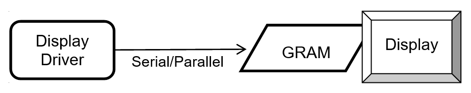
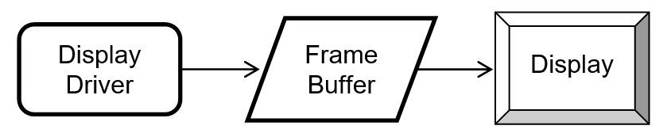
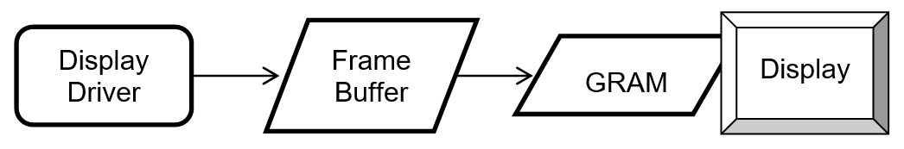
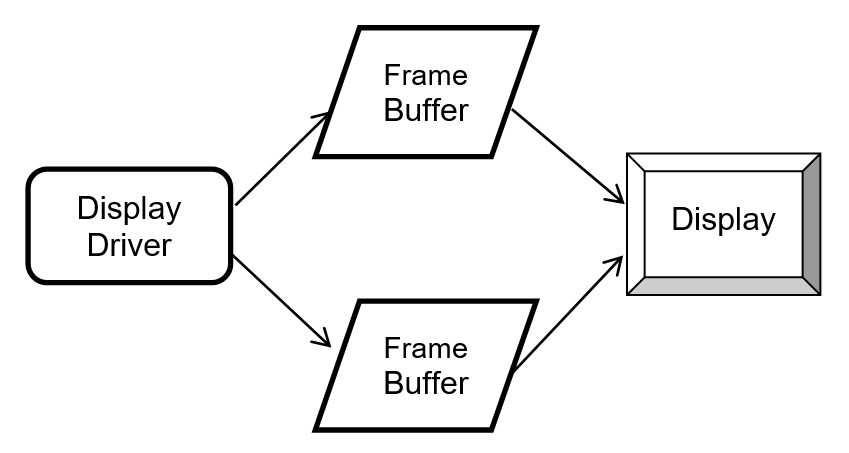
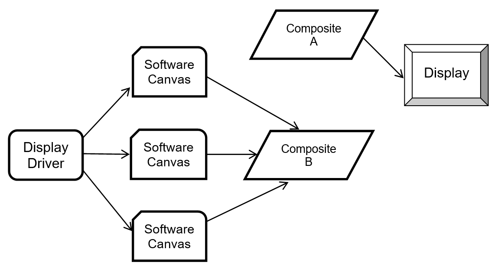
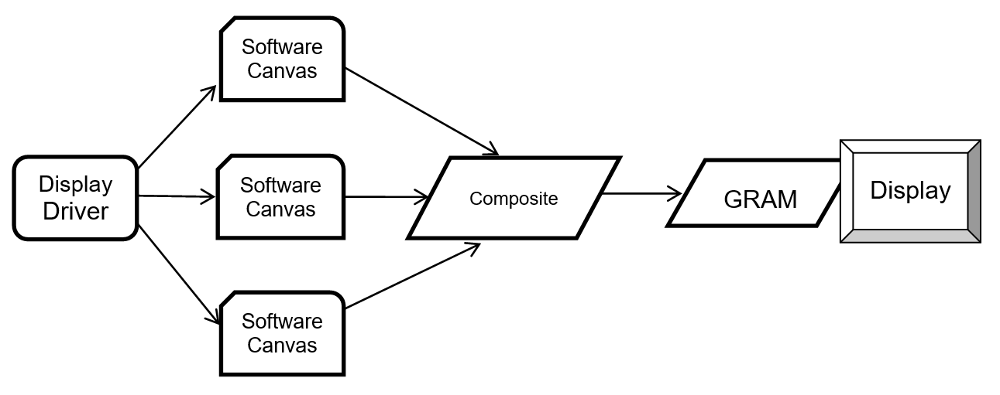
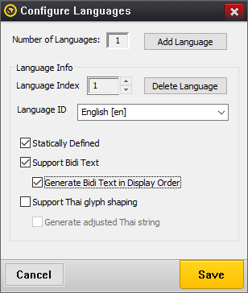
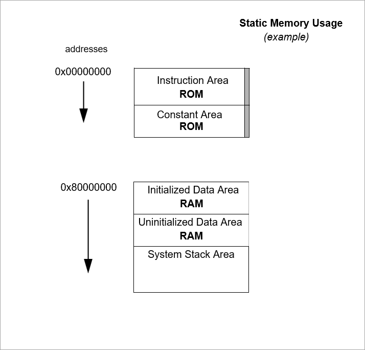

Chapter 3 - Functional Overview of GUIX
This chapter contains a functional overview of the high-performance GUIX user interface product.
Execution Overview
GUIX implements an event driven programming model. This means that the GUIX framework is primarily driven by the receipt of events pushed into the GUIX event queue. The processing of these events takes place in the context of the GUIX thread, which is a ThreadX thread created during GUIX system initialization.
GUIX applications define the user interface by calling GUIX API functions to create windows and child widgets, and customize the appearance of these widgets by calling additional API functions used to define colors, styles, fonts, and various other attributes of each window or widget type. If you are using GUIX Studio to create the appearance of your user-interface screens, much of this work of calling GUIX API functions to create your display is done for you by the GUIX Studio application.
GUIX applications interact with the system user and with external business logic by handling events retrieved from the GUIX event queue. These events are usually produced by GUIX widgets, but they can also be created by external threads. When a typical GUIX button is pushed, that button sends an event to the button’s parent window. Your application program will act on that button push by providing a handler for the button push event.
Additional GUIX threads are often created for things such as input drivers. A typical touch screen input driver is executed as a standalone thread external to the main GUIX thread. The touch input driver sends touch information into the GUIX thread by sending events into the GUIX event queue.
Since many user-interface operations such as animations require accurate timing information, GUIX also implements a simple and easy to use timer interface. This timer interface is built upon the ThreadX timer service, and is configured automatically at system startup.
The vast majority of the GUIX software is independent of any hardware dependencies. The framework does require hardware-specific input drivers and hardware-specific graphics drivers. The details of how these hardware specific drivers are implemented are deferred to chapter 5.
Initialization
The service gx_system_initialize must be called before any other GUIX service is called. GUIX system initialization can be called from the ThreadX tx_application_define routine (initialization context) or from application threads. The gx_system_initialize function creates the GUIX event queue, initializes the GUIX timer facility, creates the main GUIX system thread, and initializes various data structures maintained by GUIX during the execution of your application.
After gx_system_initialize returns, the application is ready to create displays, canvases, windows, widgets, and customize the properties of all GUIX objects. Much of the GUIX object creation API can be called from tx_application_define or from application threads.
Application Interface Calls
Calls from the application are largely made from tx_application_define (initialization context) or from application threads. Please see the "Allowed From" section of each GUIX API described in Chapter 4 to determine what context it may be called from.
Where an "Allowed From" section lists Initialization, it means the initialization context described above — from tx_application_define onward — and not earlier. Initialization in ThreadX names the whole span between processor reset and the thread scheduling loop, but the kernel’s internal data structures are set up by tx_kernel_enter, which calls tx_application_define once that work is done. GUIX creates ThreadX objects on the application’s behalf, so a GUIX service called before tx_kernel_enter — from a C++ static constructor, say, or from main before the call — has its work silently undone: the objects are linked onto kernel lists that tx_kernel_enter subsequently resets, and the service still returns GX_SUCCESS. See "Calling ThreadX Services During Initialization" in Chapter 3 of the ThreadX User Guide.
For the most part, processing intensive activities are deferred to the internal GUIX thread, including all event processing and widget/window drawing.
The GUIX API functions can be called from any thread, with the exception of timer threads or interrupts. The reason for this restriction is to prevent blocking of the timer thread, as certain GUIX APIs have the potential to block the thread while acquiring a mutex. This can also be problematic if the request originates from an interrupt, as it may lead to protection failure.
Nevertheless, it is usually considered to be better architecture to separate your time-critical business logic from your user interface logic. Since the user interface drawing operations can sometimes take a long time depending on your display size and CPU performance, you normally would not want to have time-critical threads delayed waiting for a drawing operation to complete.
Internal GUIX Thread
As mentioned, GUIX has an internal thread that performs the bulk of the GUI processing. This thread is created by the application software by calling gx_system_initialize followed by gx_system_start.
The priority of the internal GUIX thread is determined by the #define GX_SYSTEM_THREAD_PRIORITY. This value defaults to 16 (middle
priority) but can be modified by specifying this value in the gx_port.h or gx_user.h header file, overriding the default value.
The GUIX thread time slice is similarly defined by the #define GX_SYSTEM_THREAD_TIMESLICE, which defaults to the value 10 ms.
The stack size of the system thread is determined by the #define GX_THREAD_STACK_SIZE, which is found in the gx_port.h header file,
but can also be overridden by specifying this value in your gx_user.h
header file.
The internal GUIX thread execution loop is composed of three actions. First, GUIX retrieves events from the GUIX event queue and dispatches those events for processing by the GUIX windows and widgets. Events are typically pushed into the GUIX event queue by periodic timers, input devices such as a touch screen or keypad, and by GUIX widgets themselves as they process user input. Next, after all events have been processed, GUIX determines if a screen refresh is needed, and if so performs the processing necessary to update the display graphics data, mainly by calling the drawing functions of those windows and widgets which have been marked as dirty. Finally, GUIX suspends the GUIX thread until a new input event or events arrive.
Event Processing
Touch or pen input events are processed by determining the top-most window or widget beneath the touch or pen input pixel position and calling that window/widget’s event processing function. If the widget understands pen input events, it will process the event as appropriate for that widget type. If not, the top-most widget will pass the touch or pen input event to the widget’s parent for processing. This passing of the event up the chain continues until either the event is handled or the event arrives at the root window, in which case the event is discarded.
Keypad events are sent to the window/widget that has input focus. Input focus status is maintained by the GUIX gx_system component.
Timer events are always dispatched to the window or widget that owns the timer for processing.
Internally generated events, such as button click events or slider value change events, are always sent to the parent of the widget generating the event. If the parent does not process the event, it is passed up the chain similar to touch or pen input events.
Drawing
Once all the event processing is complete, the GUIX internal thread determines if any display update is needed and if so the appropriate window/widget drawing functions are called. When drawing is complete, the GUIX internal thread simply waits on its event queue for the next GUIX event to process.
GUIX implements the concept of dirty areas, which are areas that need to be re-drawn, for each widget and canvas. A widget can only draw to areas that have previously been marked as dirty. When a widget drawing function is called, all drawing operations are internally clipped to the previously defined dirty rectangle. Attempts to draw outside of this area are ignored.
Widgets and windows mark themselves as dirty by calling the API function gx_system_dirty_mark. This function marks the entire widget or window as needing to be redrawn. A second function, gx_system_dirty_partial_add, can be invoked as an alternative to mark only a portion of a window or widget as dirty.
This model of marking widgets as dirty and then redrawing those widgets only when all input events have been processed is referred to as deferred drawing. The GUIX deferred drawing algorithm and dirty list maintenance is designed to improve drawing efficiency. Since drawing operations are typically expensive, GUIX works hard to prevent unnecessary drawing.
Drawing is done to a GUIX canvas. A canvas is a memory area reserved to hold graphics data. A canvas may or may not be directly linked to the hardware frame buffer, depending on the system architecture and memory constraints. Before any drawing can occur, a canvas must first be opened for drawing by calling the gx_canvas_drawing_initiate API function. This API prepares a canvas for drawing and established the current drawing context. When GUIX performs a system canvas refresh, the canvas is opened for drawing and the drawing context established before the widget-level drawing APIs are invoked. Therefore widgets do not need to initiate drawing on a canvas within the widget drawing function.
However, if an application desires to perform immediate drawing to a canvas, outside the flow of the standard GUIX deferred drawing algorithm, the application must directly invoke the gx_canvas_drawing_initiate prior to calling any other drawing API functions, and must call gx_canvas_drawing_complete once the immediate drawing has been completed.
User Input
GUIX supports touch screen, mouse, and keyboard devices with predefined event types. Additional input devices can be utilized by defining custom event types, or by mapping the custom input device to the predefined event types.
Actions associated with these devices are translated into events that are processed by the internal GUIX thread. Driver level software written to support a touch screen must prepare and send to the GUIX event queue events for pen-down, pen-up, and pen-drag operations. Similarly a keypad input driver must generate events for key press and key release input.
Modal Dialog Execution
Modal dialog execution refers to presenting a window to the user that must be closed in some way before any other GUIX windows or widgets can receive user input. Modal dialogs capture all user input while the dialog window is displayed, regardless of the x,y position of touch or mouse input events.
Modal dialogs are triggered by the application software by first creating the window in the normal way by calling gx_window_create, and then calling the GUIX API function gx_window_execute.
When the gx_window_execute function is called, GUIX enters a local event processing loop. The gx_window_execute function does not return to the caller until the dialog window is closed, either by user input or by calling gx_window_close. For this reason, it is very important never to call the gx_window_execute function from any thread other than the GUIX internal thread.
Periodic Processing
In order to provide display effects, sprite animation, and support for application periodic requests, GUIX uses one ThreadX timer. This single timer is used to drive all GUIX time-related needs. By default, the frequency for the GUIX internal timer processing is set to 20ms via the constant GX_SYSTEM_TIMER_MS, which is defined in gx_api.h, unless the constant is previously defined in gx_port.h or gx_user.h header. The default frequency may be changed by the application via a compilation option when building the GUIX library or by explicitly redefining it in gx_user.h.
| Note that the GUIX timer frequency is expressed in RTOS timer ticks, and is defined by the constant GX_SYSTEM_TIMER_TICKS. The value of GX_SYSTEM_TIMER_TICKS is calculated using GX_SYSTEM_TIMER_MS and TX_TIMER_TICKS_PER_SECOND. The user can re-define any of these values in the gx_port.h or gx_user.h to adjust the GUIX timer frequency and resolution. |
Display Driver
Display drivers are responsible for providing a set of drawing functions to the core GUIX code. The implementation of each of these drawing functions is determined by the driver, and when possible the implementation will leverage hardware acceleration support. In general the drawing function works by writing pixel data to a memory buffer, which may be the physical frame buffer or it may be a secondary buffer depending on the driver architecture. Many drivers implement double buffering using two frame buffers, and these buffers are toggled by invoking the buffer toggle function. GUIX calls these functions internally at the appropriate times. For memory constrained systems, the drawing functions may only write to a single memory frame buffer.
GUIX provides default software implementations of each low-level drawing function at every support color depth and format. These functions are invoked via function pointers maintained within the GX_DISPLAY structure. When hardware-specific drivers are created, they typically will overwrite some number of these function pointers with functions that are specific to the target hardware.
A typical hardware display driver is implemented by first creating the default GUIX display driver for the required color depth and format. Then the hardware driver will replace those functions that need to be optimized or customized for the particular hardware implementation.
GUIX support pixel color formats ranging from 1-bpp monochrome to 32-bpp a:r:g:b format. GUIX also supports many variations within each broad color-depth category, such as r:g:b versus b:g:r byte order, packed pixel versus word-aligned pixel formats, and alpha channels. There are currently 25 distinct color formats supported, but this list grows as hardware vendors deliver new variations.
Display Memory Architectures
Various hardware targets and displays utilize a variety of different display memory architectures, depending on the memory constraints of the target and the functionality requirements of the application. We will outline some of the common memory architectures here with a brief description of each.
Model 1) No frame buffer, graphics data held in external GRAM:

In the model above, no memory for a frame buffer exists in memory local to the CPU. All graphics data is stored in an external GRAM which is incorporated into the display itself. The interface to the external GRAM can be parallel or serial. This type of architecture is very low cost; however it can exhibit unwanted tearing effect when the graphics data is updated.
Model 2) One local frame buffer:

In this model, memory for the graphics data is allocated from a random-access memory that is directly accessible the CPU. Dedicated hardware must be present to repeatedly transmit the graphics data (along with timing signals) from the local memory to the display. This model differs from model 1 in that the graphics memory is a block of the local SRAM or DRAM available to the CPU. This may be the same memory in which stack and program variables live.
Model 3) Local frame buffer + external GRAM:

Model 3 is a combination of the first two. In this model, sufficient local memory exists to hold one frame buffer. In addition, the display device provides an external GRAM and automatically refreshes itself using the data provided in the GRAM. This architecture benefits from improved update efficiency because we can transfer the modified portion of the local frame buffer to the external GRAM in one block transfer, often utilizing onboard DMA channels. This model also eliminates the tearing and flicker that can be present in either of the first two models, because only completed graphics contents is copied to the external GRAM.
Model 4) Ping-pong frame buffers:

In model 4, sufficient memory is present to provide two local frame buffers. In this case, GUIX treats one frame buffer as the active frame buffer, and the other as the working frame buffer. When a display update or drawing operation is in progress, it takes place in the working buffer. When the drawing operation completes, the buffers are toggled, and the working buffer becomes the active buffer and the active buffer becomes the working buffer. This model also eliminates screen flicker and tearing that can be observed in a single buffered system.
Model 5) Ping-pong buffers with canvas compositing:

In model 5, any number of canvases can be created, up to the limits of available memory. The canvases can be overlaid or blended together as defined by the application to create the canvas composite. When a new composite is created after a screen refresh operation, the active and working composite buffers are toggled in an operation identical to the standard ping-pong buffer architecture. Model 5 adds the ability to perform screen fade and blending operations by blending the canvases into the final output composite.
Model 6) Canvas compositing with external GRAM:

Model 6 is a slight variation on Model 5, in which only one composite buffer is required and the composite buffer is then transferred to external GRAM. This model also supports full screen blending and overlays.
String Encoding
GUIX by default supports UTF8 format string encoding. Support for UTF8 string encoding can be disabled by defining GX_DISABLE_UTF8_SUPPORT in the gx_user.h header file. If UTF8 encoding is disabled, GUIX will internally use only standard 8-bit ASCII plus Latin-1 code page character encoding. Disabling UTF8 string encoding results in a slightly smaller GUIX library footprint and slightly faster runtime execution of string handling and text drawing functions.
UTF8 string encoding has the following traits:
-
ASCII strings take no more storage space than standard 7-bit ASCII encoding.
-
Most ANSI-C string functions work with UTF8 string encoding without modification.
All active character sets in the world, including Kanji character sets, can be represented using UTF8 string encoding.
Static and Dynamic Strings
The strings assigned to your GUIX widgets which support text display can be statically defined string constants, which are normally placed in constant storage as part of the GUIX String table described below, and dynamically defined strings, which are strings generated at runtime using services such as sprintf or gx_utility_ltoa.
Examples of dynamic strings might include a value displayed as a number within a GUIX prompt widget, or a "time / date" string which is dynamically formatted based on the user’s location and format preferences. If you create strings at runtime which will be assigned to GUIX widgets such as GX_PROMPT or GX_TEXT_BUTTON widgets, you must choose to either statically allocate the storage for these runtime generated strings (i.e global character arrays), or you can define and install a dynamic memory allocator function and use the GX_STYLE_TEXT_COPY style, which instructs those widgets to create a private copy of text strings assigned.
It is a programming error to use temporary storage, such as an automatic character array, to hold a dynamically generated string and then assign this string to a widget that does not have the GX_STYLE_TEXT_COPY style. When this style is not enabled, the widget simply copies the provided string pointer, and the string data must be statically allocated. Otherwise the widget retains a pointer to storage whose lifetime has ended, and the behavior is undefined. That said, a typical consequence is that the widget draws garbage data.
Passing GX_STRING arguments
The GUIX API functions which accept a GX_STRING parameter always verify that the length of the string pointed to by the GX_STRING.gx_string_ptr field match the value of the GX_STRING.gx_string_length field. If the two fields are not consistent, a GX_INVALID_STRING_LENGTH error is returned and the API called returns without accepting the string assignment.
For safety considerations the GUIX software never internally uses the standard C string functions such as strlen or strcpy. These functions have been known to be susceptible to malicious attacks when string data is acquired dynamically which is often the case with connected applications.
GUIX library releases prior to release 5.6 defined API functions which accepted (GX_CONST GX_CHAR *text) as a parameter. These functions, while still supported for backwards compatibility, have been obsoleted and replaced by the preferred API functions which accept (GX_CONST GX_STRING *string) as an input parameter.
Do not use the deprecated string API in new code. The pre-5.6 GX_CHAR * functions do not carry a string length. They cannot safely handle strings that are not NUL-terminated and cannot prevent callers from supplying oversized buffers. The GX_STRING-based replacement functions include an explicit gx_string_length field that enables bounds checking throughout the library.
|
By default, the deprecated text handling API is enabled allowing all previously written applications to build cleanly with the latest updates to the GUIX library. To disable the deprecated text handling API, the definition GX_DISABLE_DEPRECATED_STRING_API should be added to the gx_user.h header file. All new applications should define GX_DISABLE_DEPRECATED_STRING_API and should use only the replacement API functions. All output files generated by GUIX Studio for GUIX library version release 5.6 or later will utilize only the replacement API functions. When the deprecated API is enabled, a compile-time warning is emitted to remind developers to migrate.
The following table lists the deprecated and newly defined replacement API function names:
| Deprecated Function Name | Replaced With |
|---|---|
gx_binres_language_table_load |
gx_binres_language_table_load_ext |
gx_canvas_rotated_text_draw |
gx_canvas_rotated_text_draw_ext |
gx_canvas_text_draw |
gx_canvas_text_draw_ext |
gx_context_string_get |
gx_context_string_get_ext |
gx_display_language_table_get |
gx_display_language_table_get_ext |
gx_display_language_table_set |
gx_display_language_table_set_ext |
gx_display_string_get |
gx_display_string_get_ext |
gx_display_string_table_get |
gx_display_string_table_get_ext |
gx_multi_line_text_button_text_set |
gx_multi_line_text_button_text_set_ext |
gx_multi_line_text_input_char_insert |
gx_multi_line_text_input_char_insert_ext |
gx_multi_line_text_input_text_set |
gx_multi_line_text_input_text_set_ext |
gx_multi_line_text_view_text_set |
gx_multi_line_text_view_text_set_ext |
gx_prompt_text_get |
gx_prompt_text_get_ext |
gx_prompt_text_set |
gx_prompt_text_set_ext |
gx_single_line_text_input_text_set |
gx_single_line_text_input_text_set_ext |
gx_system_string_width_get |
gx_system_string_width_get_ext |
gx_system_version_string_get |
gx_system_version_string_get_ext |
gx_text_button_text_get |
gx_text_button_text_get_ext |
gx_text_button_text_set |
gx_text_button_text_set_ext |
gx_text_scroll_wheel_callback_set |
gx_text_scroll_wheel_callback_set_ext |
gx_utility_string_to_alphamap |
gx_utility_string_to_alphamap_ext |
gx_widget_string_get |
gx_widget_string_get_ext |
gx_widget_text_blend |
gx_widget_text_blend_ext |
gx_widget_text_draw |
gx_widget_text_draw_ext |
GUIX String Table
The GUIX string table and string resources are registered with a GUIX display instance.
Each display in a multi-display system has its own string table, and each display can run in its own selected language. The other GUIX resource types (colors, fonts, and pixelmaps) are also maintained by the GUIX Display component, since these resource types are specific to each display color format and color depth.
While you can manually create your application string table, most often the display string table is defined by the GUIX Studio application as part of your project resource file. The available languages are also defined in the resource header file. The display string table is a multi-column table of pointers to application strings. Each column of the string table represents one language supported by the application. If your application supports only one language, for example English, then your string table will have only one column. Still, you can add support for additional languages at any time without modifying your application software.
The active string table is assigned by calling the gx_display_string_table_set API function. This function is called automatically by the GUIX Studio generated startup code, but can also be called directly by the application to change the active string table.
The active language is assigned by calling the gx_display_active_language_set API function. This function determines which column of the display string table is active.
When this function is invoked, a GX_EVENT_LANGUAGE_CHANGE event is sent to all visible GUIX widgets, allowing them to update to display the newly active string data.
Widgets and application software resolve statically defined strings using string ID values and the gx_display_string_get_ext or gx_widget_string_get_ext API functions. These functions return the GX_STRING associated with a given string ID and the currently active language.
Bi-directional Text Display
GUIX provides two strategies for bi-directional text support.
One option is to do bidi text reordering within the GUIX Studio application. Using this option GUIX Studio is responsible for generating bidi text to the output file in its display order. This solution has zero impact on the runtime performance and does not require any additions to the GUIX runtime library. To allow GUIX Studio to generate display order bidi text strings, you should select the Generate Bidi Text in Display Order checkbox in the GUIX Studio language configuration dialog:

With these options selected, the generated resource file will contain Bidi strings generated in display order, and no extra processing is required within the GUIX runtime library.
The second option is to do bidi text reordering at runtime. This option is supported for those applications that must handle bidi text string that are dynamically defined, and not generated by the GUIX Studio application. In this case, the GUIX runtime library is responsible for reordering the bidi text before drawing each text string. This solution has a runtime performance and memory impact. Sufficient dynamic memory must be available for bidi text reordering process. This solution requires that the conditional GX_DYNAMIC_BIDI_TEXT_SUPPORT be defined when building the GUIX library. Two API functions gx_system_bidi_text_enable and gx_system_bidi_text_disable are provided to enable/disable bidi text support at runtime.
You should not use both GX_DYNAMIC_BIDI_TEXT_SUPPORT and configure GUIX Studio to generate Bidi text in display order. You must select one strategy or the other for bidi text string handling.
Memory Usage
GUIX resides along with the application program. As a result, the static memory (or fixed memory) usage of GUIX is determined by the development tools; e.g., the compiler, linker, and locator. Dynamic memory (or run-time memory) usage is under direct control of the application.
Static Memory Usage
Most of the development tools divide the application program image into five basic areas: instruction, constant, initialized data, uninitialized data, and the GUIX thread stack. The figure below demonstrates one possible layout of these memory areas:

It is important to understand that this only an example. The actual static memory layout is specific to the processor, development tools, underlying hardware, and the application itself.
The instruction area contains all of the program’s processor instructions. This area is often located in ROM.
The constant area contains various compiled constants, which in GUIX contains default settings and all application resources (images, strings, fonts, and colors). In addition, this area contains the "initial copy" of the initialized data area. During the compiler’s initialization process, this portion of the constant area is used to set up the global initialized data in RAM. The constant area is typically the largest and usually follows the instruction area and is often located in ROM.
GUIX pixelmaps and fonts typically require large amounts of constant data storage. These large static data areas are normally kept in ROM or FLASH.
The GUIX thread stack is defined within the uninitialized data area (as a global variable) in gx_system.h file as follows:
_gx_system_thread_stack[GX_THREAD_STACK_SIZE];GX_THREAD_STACK_SIZE is defined in gx_port.h, but may be overridden by the application by defining this symbol in the gx_user.h header file or via project options or command line parameters. The stack size must be large enough to handle the worst case event handling and nested drawing calls.
Dynamic Memory Usage
As mentioned before, dynamic memory usage is under direct control of the application. Control blocks and memory associated with canvases, etc. can be placed anywhere in the target’s memory space. This is an important feature because it facilitates easy utilization of different types of physical memory — at run-time.
For example, suppose a target hardware environment has both fast memory and slow memory. If the application needs extra performance for drawing, the canvas memory can be explicitly placed in the high-speed memory area for best performance.
Several optional GUIX services and features require a runtime dynamic memory allocation mechanism, commonly referred to as a heap. These services and features are completely optional, and many GUIX applications do not use any heap and do not define a runtime memory allocation mechanism.
If you will be using services which require runtime memory allocation, you must install functions which GUIX will call when memory must be dynamically allocated or freed. You can implement these functions as you prefer, so that even in this case the location of the dynamic memory pool is under application control. To install support for dynamic memory allocation, the application should invoke the API service gx_system_memory_allocator_set during program startup to define your memory allocation and memory free services. Refer to the documentation of this API for a complete example.
GUIX services which require a runtime memory allocation and de-allocation service include:
-
Loading binary resources from external storage into the GUIX runtime environment.
-
The software runtime jpeg image decoder.
-
The software runtime png image decoder.
-
Using text widgets with GX_STYLE_TEXT_COPY.
-
Runtime pixelmap resize and rotation utility functions.
-
Runtime screen and widget control block allocation.
For smaller applications, GUIX resources are usually compiled and statically linked as part of the application image, and binary resource installation is not required. Binary resources allow an application to install resources (fonts, images, languages) at runtime loaded from some storage location, such as a flash drive or a URL.
The runtime jpeg and png decoders are optional components. Most GUIX applications allow the GUIX Studio tool to pre-decode all required image files, and store them as proprietary GUIX Pixelmap data resources. These services are provided for completeness for those applications that require runtime conversion of jpeg and/or PNG images to pixelmap format.
GX_STYLE_TEXT_COPY allows the user to specify that a particular widget or widgets will keep it’s own private copy of dynamically assigned text. Using this option requires that the memory allocation mechanism be installed prior to use. If this style flag is not provided when a text type widget is created, the application must allocate static storage areas for all dynamically created and assigned text strings. Automatic variables should not be used in this case to hold runtime generated string data. If the GX_STYLE_TEXT_COPY style is enabled, automatic variables may be used to hold string data assigned to GUIX widgets, since each widget will create its own copy of the assigned text.
Pixelmap resize and rotation utility functions return the resulting translated pixelmap as a new pixelmap available to the application. Sufficient dynamic memory must be available to hold these runtime generated pixelmap data blocks if these services are used.
Finally, the control blocks for the GUIX screens and widgets can be statically or dynamically allocated. For smaller applications, it is common to create all application screens during program startup and use statically allocated control blocks. For large applications, it is common to create the screen and child widget controls dynamically on an as-needed bases. Dynamically allocated control blocks are specified by selecting the Runtime Allocate checkbox in the GUIX Studio properties view, or by passing in the style flag GX_STYLE_DYNAMICALLY_ALLOCATED when creating a widget via the standard API. Using dynamically allocated widget control blocks requires that memory allocation and deallocation services are defined as described above.
GUIX Components
The GUIX APIs are divided and organized into several basic groups which correspond to fundamental components of the GUIX system. The fundamental components include:
| Components | Description |
|---|---|
GX_SYSTEM |
The GUIX system component, responsible for initialization, events, timers, string tables, and visible widget hierarchy management. |
GX_CANVAS |
A drawing area. A Canvas can be a thin abstraction of the hardware frame buffer, or it might also be a pure memory canvas. The canvas type is determined by parameters passed to the gx_canvas_create API function. |
GX_CONTEXT |
The drawing context component. The drawing context contains information about the screen, canvas, and brush, and clipping area for the current drawing operations. |
GX_DISPLAY |
Provides the APIs and driver-level implementations to allow your application and the GUIX widgets to perform drawing on a canvas. GX_DISPLAY is implemented to correctly render graphics on each canvas using that canvas' required color format. The GX_DISPLAY component also manages the resources (colors, fonts, and pixelmaps) available to widgets drawing to canvases linked to each display. |
GX_WIDGET |
The basic visible widget object and associated APIs. All GUIX widget types are based on or derived from the basic GX_WIDGET type. |
GX_UTILITY |
Utility functions for working with rectangles, functions for string conversion, and non-ANSI mathematical functions are included in this group. |
In addition to these basic components, GUIX includes APIs unique to each type of widget provided in the library. These APIs are described in Chapter 4 of this User Guide, "Description of GUIX Services".
GUIX System Component
The GUIX system component provides several services that are global to the UI application. These services include: initialization, event management, display management, resource management, timer management, and widget management. Each service is essential to the organization of your application program, and these services are described in more detail in the following sub-sections.
Initialization
GUIX initialization is accomplished by the application calling the service gx_system_initialize, which may be called by the application from the ThreadX tx_application_define routine (initialization context) or from application threads. The gx_system_initialize function initializes all global GUIX data structures and creates the GUIX system mutex, event queue, timer, and thread. Once gx_system_initialize returns, the application can use GUIX.
Thread Processing
The internal GUIX thread — created during initialization — is responsible for most of the processing in GUIX. The processing in this thread first completes any additional initialization required by the underlying display driver. Once this is complete, the GUIX thread enters a loop which first processes all events present in the GUIX event queue and then refreshes the screen if required. The screen refresh executes the necessary GUIX drawing functions, based on what is visible and has been marked as dirty meaning it needs to be redrawn. When there are no events and nothing left to refresh on the display, the GUIX thread will suspend, waiting for the next GUIX event to arrive.
RTOS Binding
The GUIX system component is by default configured to utilize the ThreadX real time operating system for services such as thread services, event queue services, and timer services. GUIX can easily be ported to other operating systems by using the preprocessor directive GX_DISABLE_THREADX_BINDING and re-building the GUIX library. This removes the ThreadX dependencies from the GUIX source code, and allows the application developer to implement the required operating system services using whatever RTOS is provided by the target system. Appendix F - GUIX RTOS Binding Services describes the services that need to be implemented to port GUIX to an operating system other than the ThreadX operating system.
When GX_DISABLE_THREADX_BINDING is defined, the application may also define GX_ENABLE_ERROR_CALLBACK to register a custom error handler. The callback has the following signature:
VOID gx_generic_error_process(UINT error_code, ULONG error_count);This callback is invoked when GUIX detects an internal error, allowing the application to take custom recovery action. For example, an application running on a non-ThreadX RTOS might suspend the GUIX task in response to a fatal error. Without GX_ENABLE_ERROR_CALLBACK, GUIX uses its default error handling behavior.
Multithread Safety
The GUIX API is available from the GUIX thread context as well as other application threads. Application threads can interact with the GUIX thread by sending and receiving events, by access to shared variables, and through use of the GUIX API functions. GUIX uses an internal ThreadX mutex for multi-thread resource protection. In addition, GUIX prevents the internal structure of visible widgets from being modified once a screen refresh operation has begun. APIs which would modify the tree of visible objects are blocked while drawing operations are in progress, and released once the screen refresh is complete.
System Timers
GUIX provides the application with periodic timers, which are often used for periodic update of data displayed in GUIX windows. This is accomplished via a ThreadX periodic timer, which is also used to perform GUIX system-level effects like screen fade in/out, etc.
The application can create timers and utilize the same timer facility that is used internally by GUIX. Of course the application can also directly create and use ThreadX timers if required. The advantage of the GUIX timers is that they are very easy to use and are pre-configured to work within the GUIX event-driven processing system.
To create and start a GUIX timer, the application should invoke the function gx_system_timer_start. The parameters to this function include a pointer to the calling widget, the timer ID (allowing one widget to start many timers), and the initial and reschedule timeout values. If the reschedule timeout value is 0, the timer will only run one time and will delete itself from the active timer list once it expires.
Once started, the GUIX timer will send GX_EVENT_TIMEOUT events to the timer owner, either once or periodically depending on the timer reschedule value. A GUIX timer can be stopped by calling the API function gx_system_timer_stop.
Pen Speed Configuration
The GUIX system component holds configuration information related to pen speed tracking. GUIX internally generated GX_EVENT_VERTICAL_FLICK and GX_EVENT_HORIZONTAL_FLICK events based on the speed and distance of PEN_DOWN events generated by the touch input driver, if any. The application can configure the minimum distance and speed required to trigger these internally generated events using the gx_system_pen_configure API function.
Screen Stack
The GUIX system component provides services related to the GUIX screen stack, which is an optional functionality supporting a virtual widget stack onto which screens can be pushed, popped, and retrieved at runtime by the application. The screen stack is useful for managing complex menu systems, wherein the route by which the user may arrive at various states in the menu system is varied. Returning to the previous state in the menu system can be easily done by first pushing the previous screen state, then displaying the new screen, and allowing the new screen to pop the previous state from the screen stack when the current screen is dismissed.
Clipboard Maintenance
GUIX supports a clipboard for copying and pasting text during runtime execution. This support is provided by the GUIX System component.
Dirty List Maintenance
GUIX maintains a list of dirty widgets, meaning widgets that are visible and need to be redrawn due to status changes or being made newly visible. This dirty list improves drawing performance by allowing GUIX to do one canvas refresh operation to reflect all current changes to the UI status, rather than doing a canvas refresh as each UI change is made. This dirty list is also maintained by the GUIX system component.
Animation Control Block Pool
Applications often desire to execute multiple animation sequences, often in parallel. GUIX maintains a pool of animation control blocks from which the application can allocate and use. This frees the application from statically defining these control blocks and allows them to be reused at different times, rather than defining a unique animation control block for every animation that the application might define. The animation control block pool is also maintained by the GUIX system component.
System Error Handling
The GUIX system error handler is intended to assist the application in finding internal system errors in GUIX that might be more difficult to determine from the API perspective. Whenever a system error occurs inside of GUIX the internal _gx_system_error_process function is called. This function saves the error code provided and increments the total number of system errors detected. The system error variables are defined as follows:
UINT _gx_system_last_error;
ULONG _gx_system_error_count;
If the GUIX application is behaving strangely, it is useful to look at the error count variable in the debugger. If it is set, a good way to troubleshoot the problem is to set a breakpoint in the _gx_system_error_process function and see when/where it is being called from.
GUIX Canvas Component
The canvas component is responsible for all canvas related processing. A canvas is effectively a virtual frame buffer. Your application must create at least one canvas in order to produce graphical output. Typically, you would create at least one canvas for each physical display supported by your system.
All GUIX drawing takes place on a canvas. In simpler or memory constrained systems, there will likely be only one canvas which might be directly linked to the visible frame buffer, whereas systems with more memory and more advanced graphics requirements might require multiple canvases. Making multiple canvases available for one display enables features such as screen and window fade-in and fade-out effects. Canvases can be one of two main types, simple or managed.
A simple canvas is an off-screen drawing area used by the application. GUIX does nothing directly with a simple canvas, but the application can use a simple canvas to render complex drawing to an off-screen buffer, and then use this off-screen buffer to refresh the visible canvas when needed.
A managed canvas is automatically displayed within the hardware frame buffer by GUIX. A managed canvas is included in building a composite canvas for those systems with enough memory to support multiple managed canvases. Managed canvases have a Z-order maintained by GUIX, and view clipping is enforced on all managed canvases.
A canvas differs from a frame buffer in that it is more generic. In memory constrained systems, there may be only one canvas and the memory for this canvas might be the visible frame buffer memory. However, for more complex systems supporting more advanced graphical overlays and multiple canvases, the managed canvases are each allocated their own memory areas which are distinct from the hardware frame buffer memory. These managed canvases are rendered into the visible frame buffer during the frame buffer refresh or toggle operation.
For hardware supporting multiple graphics layers, i.e. multiple overlayed frame buffers, the application can bind one or more canvases to the hardware graphics layers using the gx_canvas_hardware_layer_bind API. This service informs the canvas that it is linked to a particular hardware graphics layer, and once linked this canvas will attempt to utilize hardware support for canvas visibility (i.e gx_canvas_show, gx_canvas_hide), canvas alpha blending (i.e. gx_canvas_alpha_set) and canvas offset within the display (gx_canvas_offset_set).
For architectures other than the simplest single canvas/single frame buffer organization, the size of a canvas is determined by the application and may be different than the fixed size of a frame buffer. It may also be at an offset selected by the application. Other information, such as Z-order is maintained within the canvas. When the canvas drawing is complete, the contents of the canvas are transferred to the physical display by the display driver. In some systems that don’t have enough memory for a separate canvas and frame buffer memory areas, the canvas update is actually made directly to the physical display via the display driver.
Canvas Creation
A canvas object can be created during initialization or anytime during the execution of application threads. There is no limit on the number of canvas objects that can be created by an application. Most applications, however, will create only one canvas object for all GUIX drawing.
Canvas Control Block
The characteristics of each canvas object are found in its control block GX_CANVAS and is defined in gx_api.h. The memory required for a canvas object is provided by the application and can be located anywhere in memory. However, it is most common to make the canvas object control block and the drawing area a global structure by defining them outside the scope of any function.
Canvas Alpha Channel
GUIX supports alpha-blending of foreground and background colors on many levels, including bitmap alpha channel which specifies a blending ratio per pixel, brush alpha which specifies the blending ratio for a brush at 16 bpp and higher color depths, and canvas alpha which specifies the blending ratio for an overlay canvas.
The alpha value of a canvas is used when there are multiple canvases which are composited together for display within the frame buffer. If the canvas Z-order is such that a canvas is above other canvases, then the canvas alpha value can be set to blend the canvas with those that lie behind. Rapidly modifying the alpha value of a canvas is used to provide "fade in" screen transition effects, but the canvas alpha can be used in many ways.
If a canvas is bound to a hardware graphics layer using gx_canvas_hardware_layer_bind(), GUIX will attempt to implement canvas alpha blending utilizing hardware support, minimizing the software overhead associated with blending an overlay canvas.
Alpha values range from 0 through 255, where a value of 0 means the pixel is fully transparent and values greater than 0 are increasing less transparent canvas alpha value can only be supported for screen drivers running at 16-bpp and higher unless hardware assistance for canvas blending is provided.
Canvas Offset
A canvas can be offset within the visible frame buffer by invoking the gx_canvas_offset_set API service. Canvas offsets are usually used to implement sprite animations. If a canvas is bound to a hardware graphics layer by invoking the gx_canvas_hardware_layer_bind API function, GUIX will attempt to implement canvas offset changes utilizing hardware support, minimizing the software overhead associated with shifting the canvas position.
Canvas Drawing
The GUIX canvas component provides a full drawing API to the application. Before the drawing APIs such as gx_canvas_line_draw or gx_canvas_pixelmap_draw can be invoked, the target canvas must be opened for drawing by invoking the gx_canvas_drawing_initiate API function. This function prepares a canvas for drawing and creates a drawing context.
The drawing APIs that render to the canvas, such as gx_canvas_line_draw or gx_canvas_text_draw, use parameters found in the current drawing context brush to define the line style, width, and colors. These brush parameters are modified by calling the gx_context_brush_define, gx_context_brush_set, gx_context_brush_style_set, and similar API functions after a drawing context has been established by calling gx_canvas_drawing_initiate.
When GUIX invokes the window and widget drawing functions as part of a deferred canvas refresh operation, the target canvas is opened for drawing prior to calling the widget drawing function(s). Therefore the standard widget drawing functions are not required to open the target canvas, this has been done for them.
In some cases the application may want to force immediate drawing to a canvas. In this case, the application can perform the following steps.
-
Call the gx_canvas_drawing_initiate API function, passing in the target canvas and rectangle within that canvas on which the application wants to draw.
-
Call any number of canvas drawing APIs to accomplish the desired drawing.
-
Call the gx_canvas_drawing_complete API function to signal that drawing has been completed. This flushes the canvas to the visible frame buffer and/or triggers a buffer toggle operation, depending on the system memory architecture.
Drawing APIs
There are several principal drawing primitives that are required by GUIX to draw all the visual elements on the screen. These drawing APIs can also be invoked by application software, usually as part of a custom widget drawing function. These GUIX canvas drawing APIs perform parameter validation and clipping, and then pass the clipped drawing coordinates down to the display driver for hardware and color-format specific drawing implementations. These drawing API functions are defined as follows.
-
gx_canvas_alpha_set
-
gx_canvas_arc_draw
-
gx_canvas_block_move
-
gx_canvas_circle_draw
-
gx_canvas_ellipse_draw
-
gx_canvas_glyphs_draw
-
gx_canvas_hardware_layer_bind
-
gx_canvas_hide
-
gx_canvas_line_draw
-
gx_canvas_offset_set
-
gx_canvas_pie_draw
-
gx_canvas_pixel_draw
-
gx_canvas_pixelmap_blend
-
gx_canvas_pixelmap_rotate
-
gx_canvas_pixelmap_tile
-
gx_canvas_polygon_draw
-
gx_canvas_rectangle_draw
-
gx_canvas_rotated_text_draw
-
gx_canvas_shift
-
gx_canvas_show
-
gx_canvas_text_draw
The drawing API is invoked via the GUIX Canvas API, and all drawing is done using gx_canvas_* API functions. Drawing is done using the current brush in the current drawing context. Any of the shape drawing functions above can be outlined, solid color filled, or pixelmap filled as defined by the current brush. To modify the shape outline width, color, or fill, use the gx_context_brush_* API functions to define the brush within the current drawing context.
The above application level drawing APIs don’t do actual drawing to the canvas, but instead verify the caller’s parameters before invoking the display driver level drawing function. The driver level drawing function actually writes pixel data into the canvas memory.
GUIX provides stock or generic display driver drawing functions for various color depths, including 1, 2, 4, 8, 16, 24, and 32 bits per pixel (bpp). In some cases, the default software drawing implementation is replaced by hardware-accelerated implementations for those hardware targets that provide a 2D drawing accelerator.
Color Depth
GUIX supports color depths up to 32-bpp as well as monochrome and grayscale. The type of color depth support largely determined by the capabilities of the underlying physical display and also has an impact on how much memory is required for the canvas drawing area. The following is a list of color depth support along with a brief description of the variations within that color depth.
| Color Format | Description |
|---|---|
1-bit monochrome |
1-bit per pixel packed format. |
2-bit grayscale |
4 gray levels, packed four pixels per byte. |
4-bit grayscale |
16 gray levels, packed two pixels per byte. |
4-bit color |
A VGA format planar memory organization. |
8-bit grayscale |
256 gray levels |
8-bit palette mode |
1 byte per pixel used as palette index |
8-bit r:g:b mode |
A less commonly used 2:3:2 r:g:b format. |
16-bit |
Each pixel requires two bytes. Can be r:g:b or b:g:r byte order. Normally 5:6:5 structure, but can also be 5:5:5 structure or 4:4:4:4 a:r:g:b structure. |
24-bit |
Each pixel requires 3 (packed format) or 4 (unpacked format) bytes. Can be in r:g:b or b:g:r byte order as required by hardware. |
32-bit |
Each pixel requires 4 bytes with an alpha channel. Can be a:r:g:b or b:g:r:a byte order and determined by hardware. |
Mouse Support
GUIX supports drawing a mouse cursor on any desired canvas. The mouse cursor can be drawing in software or might be supported by hardware cursor overlay. In either case, the API provided to the application related to mouse cursor support is the same whether using software or hardware mouse cursor drawing.
GUIX mouse support is only enabled if the #define GX_MOUSE_SUPPORT is defined in the gx_user.h header file before building the GUIX library.
The application must define the mouse cursor and hotspot using the gx_canvas_mouse_define API function. This API accepts a pointer to the canvas on which the cursor image should be drawn, and a pointer to a GX_MOUSE_CURSOR_INFO structure, which defines the mouse cursor image and hotspot of the mouse image relative the image top-left corner.
GUIX Display Component
The display component is fundamental in GUIX, since it manages the processing of all display objects, which in themselves contain one or more canvases, widgets, and windows. The display component also interacts with the underlying hardware screen driver associated with each display through a series of function pointers.
Display Creation
A display object can be created during initialization or anytime during the execution of application threads. Typically an application creates one display object to manage each physical screen. If you have used GUIX Studio to define your application and the physical displays available, you will use the gx_studio_display_configure API function to create and initialize each of your displays.
Display Control Block
The characteristics of each display object are found in its control block GX_DISPLAY and are defined in gx_api.h. The memory required for a display object is provided by the application and can be located anywhere in memory. However, it is most common to make the display control block a global structure by defining it outside the scope of any function.
Resource Management
Resources are UI components that are needed by the application, but they are not application code. Resources are application data and are usually statically defined. Resource types include pixelmaps, fonts, colors, and strings. These resources can be changed at any time, usually without changing any application software. It is important to keep the storage of and references to resources separated from the application software to allow changing UI appearance without changing application code since changes to the application software usually require the associated re-testing and verification of that software.
The GUIX display module provides resource management facilities for all resources that are dependent on the color depth and format of the display. These facilities include maintaining the active pixelmap table, active font table, and active color table. The string table resource is maintained by the GUIX system module, since string resources do not normally need to be changed based on color depth and format.
The application software references resources by their resource ID, which is an index into the corresponding resource table. This allows the table to be changed, for example the color table might be changed when a product changes from "day mode" to "night mode", but the color ID values to remain the same.
Your application resources are written to a resource file (or set of resource files) by the GUIX Studio application. Default colors, pixelmaps, and fonts are provided automatically when you create a new GUIX Studio project, but these defaults are easily replaced as you define the look and feel of your application.
It is important to note that Resource IDs for colors, fonts, and pixelmaps cannot be resolved to their actual color, font, or pixelmap values until the active Display component is known. Since the GUIX architecture supports multiple active displays, Resource IDs can only be resolved to resource values when a widget and its associated Resource ID can be resolved to a specific display. This property is known as dynamic binding. The Resource ID for a property such as a text color, for example the resource ID GX_COLOR_ID_TEXT, might resolve to a 16-bit R:G:B value for white when used on one display, but the same color ID might resolve to a monochrome black color value when used on another display.
In practice this dynamic binding of Resources IDs to resource values means that application software and GUIX internal components should most often only resolve Resource IDs to resource values within an active drawing context. An active drawing context specifies the currently active display, which allows GUIX to resolve each Resource ID to a specific resource value. If the application software is required to find a specific resource value outside of a drawing context, this can also be done for visible widgets. Visible widgets are linked to a root window which can also be used to resolve the active canvas and display for that widget.
If a widget has been created but not yet displayed (i.e., has not been linked to any root window or other visible parent), any resource IDs associated with that widget cannot be resolved to a specific resource value other than by directly indexing into the resource table assigned to a specific display. This direct access to a specific resource table can safely be done by the application software, but is never done in the internal GUIX library software.
Widget Defaults
The GUIX display component also provides default definitions for various widget attributes. Unless otherwise specified by the application, widgets/windows are created with these system attributes. These system attributes are mainly composed of fonts, colors, and bitmaps maintained in the system resource tables. Additional attributes for default scrollbar appearance are also maintained by the GUIX display component.
The default color settings are defined by the color table assigned to each display and the pre-defined default color IDs. These default color IDs include the following.
| Color ID | Description |
|---|---|
GX_COLOR_ID_CANVAS |
Default canvas (i.e. display background) color |
GX_COLOR_ID_WIDGET_FILL |
Default widget fill color |
GX_COLOR_ID_WINDOW_FILL |
Default window fill color |
GX_COLOR_ID_DISABLED_FILL |
Default disabled widget fill color |
GX_COLOR_ID_DEFAULT_BORDER |
Default widget border color |
GX_COLOR_ID_WINDOW_BORDER |
Default window border color |
GX_COLOR_ID_TEXT |
Default text color |
GX_COLOR_ID_SELECTED_TEXT |
Default selected text color |
GX_COLOR_ID_DISABLED_TEXT |
Default disabled text color |
GX_COLOR_ID_SELECTED_TEXT_FILL |
Default selected text fill color |
GX_COLOR_ID_READONLY_TEXT |
Default readonly text color |
GX_COLOR_ID_READONLY_FILL |
Default readonly text fill color |
GX_COLOR_ID_SCROLL_FILL |
Scrollbar fill color |
GX_COLOR_ID_SCROLL_BUTTON |
Scrollbar button fill color |
GX_COLOR_ID_SHADOW |
Default shadow color |
GX_COLOR_ID_SHINE |
Default highlight color |
GX_COLOR_ID_BUTTON_BORDER |
Button widget border color |
GX_COLOR_ID_BUTTON_UPPER |
Button widget upper fill color |
GX_COLOR_ID_BUTTON_LOWER |
Button widget lower fill color |
GX_COLOR_ID_BUTTON_TEXT |
Button widget text color |
GX_COLOR_ID_TEXT_INPUT_TEXT |
Text input widget text color |
GX_COLOR_ID_TEXT_INPUT_FILL |
Text input fill color |
GX_COLOR_ID_SLIDER_TICK |
Color used to draw slider tick marks. |
GX_COLOR_ID_SLIDER_GROOVE_BOTTOM |
Color used to draw slider groove |
GX_COLOR_ID_SLIDER_NEEDLE_OUTLINE |
Color used to draw needle outline |
GX_COLOR_ID_SLIDER_NEEDLE_FILL |
Color used to fill slider needle |
GX_COLOR_ID_SLIDER_NEEDLE_LINE1 |
Color used to draw needle highlight |
GX_COLOR_ID_SLIDER_NEEDLE_LINE2 |
Color used to draw needle shadow |
These color ID values are mapped to a specific color value as defined by the color table assigned to each display. These defaults can be changed as a group for one display by calling the gx_display_color_table_set API function. If you are using GUIX Studio, the display color table is automatically initialized when your application calls the gx_studio_display_configure function.
The GUIX display component also maintains a default font table. The default font table defines the font used by each widget type unless specifically specified by the application. The pre-defined display font table IDs include the following values.
| Font ID | Description |
|---|---|
GX_FONT_ID_DEFAULT |
Default font used when no specific font is defined |
GX_FONT_ID_BUTTON |
Default font used for all text on buttons |
GX_FONT_ID_TEXT_INPUT |
Default font used for text edit fields |
The font ID used by any text type widget can be re-assigned by using the gx_<widget_type>_font_set API provided for each text-related widget type. The entire font table can be re-assigned by calling the gx_display_font_table_set API function.
Scrollbar Appearance
GUIX Display also maintains default scrollbar appearance settings for that display. These settings are defined by the GX_SCROLLBAR_APPEARANCE structure which is defined below. GUIX Display maintains one scrollbar appearance structure for vertical scrollbars and a second structure for horizontal scroll bars. The application can modify the default scrollbar appearance for any display by initializing a GX_SCROLLBAR_APPEARANCE structure and invoking the API function gx_display_scroll_appearance_set.
typedef struct GX_SCROLLBAR_APPEARANCE_STRUCT
{
GX_VALUE gx_scroll_width;
GX_VALUE gx_scroll_thumb_width;
GX_VALUE gx_scroll_thumb_travel_min;
GX_VALUE gx_scroll_thumb_travel_max;
GX_UBYTE gx_scroll_thumb_border_style;
GX_RESOURCE_ID gx_scroll_fill_pixelmap;
GX_RESOURCE_ID gx_scroll_thumb_pixelmap;
GX_RESOURCE_ID gx_scroll_up_pixelmap;
GX_RESOURCE_ID gx_scroll_down_pixelmap;
GX_RESOURCE_ID gx_scroll_thumb_color;
GX_RESOURCE_ID gx_scroll_thumb_border_color;
GX_RESOURCE_ID gx_scroll_button_color;
} GX_SCROLLBAR_APPEARANCE;| GX_SCROLLBAR_APPEARANCE Structure Member | Description | | — | — | | gx_scroll_width | Width of a vertical scrollbar or height of a horizontal scrollbar, in pixels. | | gx_scroll_thumb_width | Width of the elevator and end buttons, in pixels. | | gx_scroll_thumb_travel_max | Offset from the end of scroll bar to maximum thumb button travel point. | | gx_scroll_fill_pixelmap | Pixelmap used to fill scroll background. | | gx_scroll_thumb_pixelmap | Pixelmap used to draw scroll thumb button. | | gx_scroll_up_pixelmap | Pixelmap used to draw scroll up button. | | gx_scroll_down_pixelmap | Pixelmap used to draw scroll down button. | | gx_scroll_fill_color | Color ID of color used to fill scrollbar background. | | gx_scroll_button_color | Color ID of color used to fill scrollbar thumb button. |
In addition to these default settings for fonts, color, and styles, the application may specify any of the parameters on a case by case basis as desired using API provided by each widget type.
Skinning and Themes
Skinning allows GUIX widgets and windows to easily change their base appearance, i.e., changing the "skin" in one place will change the base appearance of all associated widgets and windows.
Re-skinning your GUIX application requires that you supply a new color, font and or pixelmap table to the GUIX Display resource tables. Since all GUIX widgets refer to their color, bitmap, or font by resource ID, providing a new resource table automatically causes all GUIX widgets to begin using your new colors and pixelmaps when they draw themselves to the desired display.
A new set of fonts, colors, and pixelmaps that are designed to work together to provide an attractive appearance is called a theme. A theme defines a set of resource tables and the size of each resource table. Any number of themes can be defined for any display using the GUIX Studio application. You must pass the starting theme index to the GUIX Studio generated function gx_studio_display_configure, which installs the initial theme into the created display. The active theme for any display can be changed at any time by calling the function gx_display_theme_install.
Root Window
For each visible canvas created by an application, the application must also create one Root Window for that canvas. This special window basically acts as a container for all the top-level application windows and widgets. The root window draws the canvas background, and since the root window is derived from the GX_WINDOW class the root window can also have wallpaper. To change the background color of your display or canvas, you simply change the fill color of the root window attached to that canvas.
If you use the GUIX Studio generated function named gx_studio_display_configure to configure your displays, then the canvas and root window for each display are created for you as part of this initialization function.
Anti-Aliasing
Anti-Aliasing is an optional feature in GUIX that is used to smooth lines, curves, and fonts. Anti-aliasing is only supported when running with a display driver utilizing 16-bpp or higher color depth.
Anti-aliased line drawing is enabled by setting the GX_BRUSH_ALIAS flash in the active brush. This applies to lines drawn directly as well as to lines drawn as the border of a polygon or circle.
Anti-aliased text drawing is enabled by using an anti-aliased font which is produced by the GUIX studio application. You specify whether a font should be generated as antialiased or binary when you create the font. Anti-aliased fonts in GUIX utilize 16 levels of transparency for each pixel.
Clipping
Clipping is supported internally by the GUIX display component, and at the window and widget layers by the parent-child architecture maintained by GUIX widgets. No window or widget is ever allowed to draw outside of that widget’s area, and a widget is never allowed to draw outside of the area of that widget’s parent.
This also prevents widgets from drawing at pixel coordinates that lay outside of the canvas memory which likely lead to memory corruption or a system failure. Widgets are not allowed to draw outside of the widget’s area, the widget’s parent area, or beyond the canvas extent.
In addition, widgets can only draw to areas that have previously been marked as dirty. This prevents an entire window being drawn, for example, when only a corner of the window has been revealed. Only the portion of the window that actually needs to be refreshed is marked as dirty, and so the window drawing function only truly refreshes pixels in the dirty area.
The GUIX display component enforces these clipping algorithms before invoking the driver level drawing functions.
Views
GUIX always maintains a set of views for each root window and each child window of the root window. Views are a dynamic, run-time determined clipping area that changes as window position and Z-order are modified. GUIX uses views to prevent a window or widget in the background from drawing on top of a window or widget in the foreground. Views enforce Z-order discipline. In addition, views are important for efficiency in that they prevent a window in the background from drawing to any area of the canvas that cannot be seen. If a window is completely covered by another window, the covered window will not be allowed to draw to the canvas at all, even if it is attempting to do so.
Display Driver Interface
GUIX display drivers are responsible for all interaction with the underlying physical screen. The display drivers have three basic functions: initialization, drawing, and frame buffer display. Initialization is responsible for preparing the physical display hardware, informing GUIX of the properties of the physical display hardware, and for informing GUIX which specific drawing functions should be used. The main display driver initialization is called from the GUIX gx_display_create function. In addition, the GUIX thread will also call a secondary display driver initialization from the thread context. This secondary display driver is only needed if the driver requires RTOS services during its initialization, e.g., device interrupts or tx_thread_sleep requests for delay between steps in the initialization process.
Once initialization is complete, the display driver is responsible for any direct drawing that can be done in the physical display hardware. Finally, the display driver is responsible for displaying the frame buffer.
GUIX Widget Component
A GUIX widget is a visible graphical element. There are GUIX components which are not visible, such as timers and math utility functions. However all visible components are derived from the basic GUIX widget component. A GUIX widget is the primary building block of the GUIX display — all other graphic elements are derived from the base widget functionality.
GUIX widgets are implemented in an object oriented manner with full support of inheritance. This is accomplished using ANSI C, which results in the smallest possible memory and processing requirements. When we speak of one particular widget, such as GX_BUTTON, being derived from another widget, such as the base GX_WIDGET, what we mean is that the GX_BUTTON control structure contains all of the member variables and function pointers of GX_WIDGET, with some additional variables that are specific to GX_BUTTON. GUIX builds up layers of widgets in this fashion, so that more complex widgets are always based on a simpler widget before them. This hierarchical model of derivation makes it easier to learn the APIs used to modify widget parameters. If you want to modify the color of a button, you use the same API you use to modify the color of a widget, namely gx_widget_fill_color_set.
The organization of visible widgets is maintained in a parent-child manner using tree structured lists linking child widgets to their parents. The children inherit characteristics from their parents such as the views into which they can draw and the canvas on which they draw. Child widgets may have their own child widgets, again inheriting various characteristics from the parent. The characteristics of any widget may be explicitly redefined via various GUIX API calls.
Widget Creation
A widget object can be created during initialization or anytime during the execution of application threads. There is no limit on the number of widget objects that can be created by an application. There is also no limit on the number of children any widget may have, within the memory limits of your target hardware.
Each widget type has its own create function, such as gx_button_create or gx_prompt_create. The first three parameters to these functions are always the same, namely a pointer to the widget control structure, a string pointer to the widget name, and a pointer to the widget’s parent. Each create function may have any number of additional parameters depending on the requirements of that particular widget type.
Widget Control Block
The characteristics of each widget object are found in its control block GX_WIDGET and are defined in gx_api.h. The memory required for a widget object is provided by the application and can be located anywhere in memory. However, it is most common to make the widget object control block a global structure by defining it outside the scope of any function. If you are using GUIX Studio, your widget control blocks can be statically allocated within your Studio generated specifications file, or they can be dynamically allocated by your application.
Dynamic Widget Control Block Allocation and De-allocation
If you are using dynamic control block allocation, you will need to define two functions that GUIX will use to allocate and free the memory required for your widget control blocks. Your functions for memory management are passed to the GUIX system component via the gx_system_memory_allocator_set API function. This function allows you to pass two function pointers into GUIX: the first is a pointer to a memory allocation function, and the second is a pointer to a memory free function. Most often, you will implement these functions using ThreadX byte pools, but the design of GUIX allows you to implement dynamic memory management in whatever way you prefer.
Dynamic widget allocation is most often employed within your Studio generated application specifications file, when you select the "dynamically allocated" option in the Studio widget properties field. However, you can also use dynamic control block allocation within your application. If you use dynamic control block allocation within your application, you should invoke the gx_widget_allocate API function to allocate the widget control block. Next, when you create the widget, make certain you pass the GX_WIDGET_STYLE_DYNAMICALLY_ALLOCATED style flag (along with any other needed style flags) to the widget create function. This flag is used to mark the widget as being dynamically allocated in the widget status field. When and if the widget is later deleted using gx_widget_delete, GUIX will check this status field and automatically call your memory de-allocator function to ensure there are no memory leaks.
| A widget created using a dynamically allocated control block must be created with the GX_WIDGET_STYLE_DYNAMICALLY_ALLOCATED style flag to prevent memory loss. |
Types
GUIX provides a rich, fully functional set of built-in widgets. As mentioned previously, all specialized widgets are derived from the base widget. Following is a list of the built-in widgets in GUIX:
GX_TYPE_WIDGET
GX_TYPE_BUTTON
GX_TYPE_TEXT_BUTTON
GX_TYPE_MULTI_LINE_TEXT_BUTTON
GX_TYPE_RADIO_BUTTON
GX_TYPE_CHECKBOX
GX_TYPE_PIXELMAP_BUTTON
GX_TYPE_ICON_BUTTON
GX_TYPE_ICON
GX_TYPE_SPRITE
GX_TYPE_SLIDER
GX_TYPE_PIXELMAP_SLIDER
GX_TYPE_VERTICAL_SCROLL
GX_TYPE_HORIZONTAL_SCROLL
GX_TYPE_PROGRESS_BAR
GX_TYPE_PROMPT
GX_TYPE_NUMERIC_PROMPT
GX_TYPE_PIXELMAP_PROMPT
GX_TYPE_NUMERIC_PIXELMAP_PROMPT
GX_TYPE_SINGLE_LINE_TEXT_INPUT
GX_TYPE_MULTI_LINE_TEXT_VIEW
GX_TYPE_MULTI_LINE_TEXT_INPUT
GX_TYPE_WINDOW
GX_TYPE_ROOT_WINDOW
GX_TYPE_VERTICAL_LIST
GX_TYPE_HORIZONTAL_LIST
GX_TYPE_POPUP_LIST
GX_TYPE_DROP_LIST
GX_TYPE_LINE_CHART
GX_TYPE_DIALOG
GX_TYPE_KEYBOARD
GX_TYPE_SCROLL_WHEEL
GX_TYPE_TEXT_SCROLL_WHEEL
GX_TYPE_STRING_SCROLL_WHEEL
GX_TYPE_NUMERIC_SCROLL_WHEEL
GX_TYPE_CIRCULAR_GAUGE
GX_TYPE_RADIAL_PROGRESS_BAR
GX_TYPE_RADIAL_SLIDER
GX_TYPE_MENU_LIST
GX_TYPE_MENU
GX_TYPE_ACCORDION_MENU
GX_TYPE_TREE_VIEW
Styles
Widget styles consist of things like border properties (raised, recessed, thin, thick, or no boarder at all) as well as properties for specific widget types, as listed previously. The widget style flags offer the simplest method for modifying the appearance of any widget. The initial widget style is always a parameter passed to the widget type specific create function.
Colors
Widgets draw themselves using colors defined in the system color table. Color IDs are defined for canvas background, default widget fill color, button fill color, text widget fill color, window fill color, and several other default color values. In addition, GX_WINDOW objects support displaying a bitmap or wallpaper as the window client is filled.
The simplest method of changing the default color scheme is to use GUIX Studio and create or define a color scheme that meets your requirements. You can also define your color scheme manually by creating an array of GX_COLOR values and invoking the gx_system_color_table_set API function.
Event Notification
GUIX events are requests made to one or more widgets to perform a particular action and notifications to notify widgets of user input and internal system status changes. For example, when a widget gains focus, the GX_EVENT_FOCUS_GAINED is sent to the widget via the gx_system_event_send API service.
Events are passed through the GUIX event queue, and each event is an instance of the GX_EVENT data structure. The GX_EVENT data structure is defined in gx_api.h, however the most important fields of the structure are the gx_event_type, gx_event_sender, gx_event_target, and gx_event_payload.
The gx_event_type field is used to identify the particular event class. The event type indicates if this is, for example, a GX_EVENT_PEN_DOWN event or a GX_EVENT_TIMER event. The gx_event_payload is a union of various data fields, and they are not all valid for every event type. You use the event type field first, before examining the other event data fields.
The gx_event_sender field contains the ID of the widget that generated the event if the event is a child-widget notification.
The gx_event_target field can be used to route user-defined events to a particular window or widget. If you want to send an event to a particular window, you should give the window a unique ID value (so that it can be positively identified), and when building the event place the window ID value in the gx_event_target field. If you don’t know the target ID or if you just want the event to be routed to the widget that has input focus, make sure to set the gx_event_target field to 0.
Finally, the gx_event_payload field is a union of various data types. For GX_EVENT_PEN_DOWN and GX_EVENT_PEN_UP events, the gx_event_pointdata field contains the x,y pixel coordinate the pen position. For timer events, the gx_event_timer_id field contains the ID of the expired timer. Other payload data fields are utilized for other event types. The complete list of pre-defined event types and their payload fields is defined in Appendix E - GUIX Event Descriptions.
The application can also add its own custom events, starting numerically after the constant GX_FIRST_APP_EVENT. All event numbers after this constant are reserved for the application’s use. Of course, the application’s widget event handler must have processing for such application events.
Event Processing
There is a default widget event processing function for each and every widget, named gx<widget-type>_event_process_. In most cases, the application won’t need to worry about the event handling of any given widget. However, in situations where the application requires custom or supplemental event processing, the application may override the default processing function with its own via the GUIX API gx_widget_event_process_set. This function overrides the default event processing function with the event function processing function specified in the API.
| Application event processing functions can take advantage (i.e., not duplicate the processing) of the default processing by simply calling the default gx_widget_event_process processing directly. |
Event processing is called exclusively from the context of the internal GUIX system thread. In this way, the stack requirements to process the event handling only applies to the GUIX thread.
Implementing Custom Event Processing (example)
You can provide your own event processing function for any widget or window in the GUIX system. If you are creating your own custom widget type, you will normally install your custom event handler in the widget creation function. If you are just extending or modifying the operation of an existing widget or window, you can call the gx_widget_event_process_set API function after the widget or window has been created. You will almost always provide your own event handling for your top-level windows (also called Screens) in order to process events generated by your child controls. Processing event generated by the child controls of a screen is the main way you add functionality to your GUIX application.
As an example, suppose you define a top-level screen named "main_menu". This screen might be defined using GUIX Studio, or you might create this screen in your application code. If you define the screen within GUIX Studio, you simply type the name of your event handler in the Studio properties field for that screen, and the Studio generated specifications code will automatically install your event handler. In this case, we will call the custom event handler main_menu_event_handler and it should be coded like this:
int main_menu_item; /* example: variable to keep track of selected item */
UINT main_menu_event_handler(GX_WINDOW *main_screen, GX_EVENT *event_ptr)
{
UINT status = GX_SUCCESS;
switch(event_ptr->gx_event_type)
{
/* this is an example for catching events from a child button */
case GX_SIGNAL(IDB_CHILD_BUTTON, GX_EVENT_CLICKED):
/* insert your button handler code here */
break;
case GX_EVENT_SHOW:
/* add functionality to the show event handler */
/* first, do default processing */
status = gx_window_event_process(main_screen, event_ptr); /* note 1 */
/* now add my own processing */
main_menu_item = 0;
break;
default:
/* pass all other events to base processing function */
status = gx_window_event_process(main_screen, event_ptr); /* note 1 */
break;
}
return status;
}In the example above, it is important to notice that for system events like GX_EVENT_SHOW (events generated internally to notify a widget of a status change), the application must pass those events to the base widget event processing function to insure that the normal processing occurs. The application can then add additional logic as desired. All events that are not handled by the application (the default case above) should also be passed to the base event processing function. Since this example was for a top-level screen based on GX_WINDOW, the default event processing function is gx_window_event_process.
Drawing Function
All widget drawing is performed separately from the event handling. This is more efficient because drawing is usually expensive in terms of CPU cycles. By implementing a deferred drawing algorithm, all of the outstanding events and associated display changes can be completed before any drawing is done, thus eliminating wasted drawing. Similar to event processing, there is a default widget drawing function for most widgets, named gx<widget-type>_draw_, where xxx is the widget type. In most cases, the application won’t need to worry about the drawing function of any given widget. However, in situations where the application requires custom or supplemental drawing, the application may override the default drawing function with its own via the GUIX API gx_widget_draw_set. This function allows the application to provide its own customized drawing function for any widget. This further allows the application to define entire new widget types.
| Application drawing functions can take advantage (i.e., not duplicate the coding) of the default drawing by simply calling it directly from the overridden drawing function. |
Widget drawing is called exclusively from the context of the internal GUIX system thread. In this way, the timing and stack requirements to perform the drawing only apply to the GUIX thread.
Implementing Custom Drawing (example)
The drawing function for any widget is referenced through an indirect function pointer which is a member of the GX_WIDGET control block. If you use GUIX Studio to define your widget, you can install your own function pointer simply by typing the name of your function in the "Drawing Function" parameter of the widget properties, and Studio will install your function pointer for you when the widget is created. If you create the widget in your application code, you must use the gx_widget_draw_set API function to install your custom drawing function after the widget has been created.
For this example, let’s assume that you want to customize the appearance of a button. The button will look very much like a GX_TEXT_BUTTON, but we will add drawing a small green "LED_ON" bitmap in the middle-right portion of the button when the button is pressed, and small "LED_OFF" bitmap when the button is not pressed. We want to create a button that looks like the illustrations below.
custom button "on"
custom button "off"
In this case, we would write a button drawing function that looks something like the following.
UINT my_button_draw(GX_TEXT_BUTTON *button)
{
GX_PIXELMAP *map;
ULONG button_style;
INT xpos;
INT ypos;
/* first, do the normal text button drawing */
gx_text_button_draw(button);
/* now add our extra pixelmap */
gx_widget_style_get(button, &button_style);
if (button_style & GX_STYLE_BUTTON_PUSHED)
{
/* use the ON pixelmap */
gx_context_pixelmap_get(GX_PIXELMAP_ID_LED_ON, &map);
}
else
{
/* use the OFF pixelmap */
gx_context_pixelmap_get(GX_PIXELMAP_ID_LED_OFF, &map);
}
if (map)
{
/* draw it 20 pixels in from right edge */
xpos = button->gx_widget_size.gx_rectangle_right;
xpos -= map->gx_pixelmap_width + 20;
/* and draw 10 pixels from the top edge */
ypos = button->gx_widget_size.gx_rectangle_top + 10;
/* draw the extra pixelmap on top of the button */
gx_canvas_pixelmap_draw(xpos, ypos, map);
}
}GUIX Drawing Context Component
The drawing context is created dynamically, at runtime, as GUIX performs each canvas refresh operation. The drawing context ties together the canvas, screen driver, and brush being used to perform the current drawing operations.
The drawing context is defined by the GX_DRAW_CONTEXT structure. This structure contains variables that define the clipping and view of the current drawing operation, define the current canvas, and define the current screen driver in use. The GX_DRAW_CONTEXT structure also holds the brush being used for drawing. The draw context brush is the member that you will work directly with in your custom drawing functions. The brush structure is defined as shown in the code below.
typedef struct GX_BRUSH_STRUCT
{
GX_PIXELMAP *gx_brush_pixelmap;
GX_FONT *gx_brush_font;
ULONG gx_brush_line_pattern;
ULONG gx_brush_pattern_mask;
GX_COLOR gx_brush_fill_color;
GX_COLOR gx_brush_line_color;
UINT gx_brush_style;
GX_VALUE gx_brush_width;
UCHAR gx_brush_alpha;
} GX_BRUSH;The gx_brush_pixelmap field defines a pixelmap to use for rectangle and polygon fills. This member is not used unless the gx_brush_style is includes the GX_BRUSH_PIXELMAP style.
The gx_brush_font member defines the font used for text drawing. The gx_brush_line_pattern member defines the pattern used for dashed lines. The gx_brush_style member is a set of style flags that can be OR’d together to fully define the brush attributes. The available brush style flags include the following.
GX_BRUSH_OUTLINE
GX_BRUSH_SOLID_FILL
GX_BRUSH_PIXELMAP_FILL
GX_BRUSH_ALIAS
GX_BRUSH_UNDERLINE
GX_BRUSH_ROUND
The gx_brush_width member defines the line with for line drawing, or the outline width for outlined shape drawing.
The gx_brush_line_color member defines the foreground color for line drawing and for text drawing.
The gx_brush_fill_color member defines the solid fill color used for shape filling. The GUIX context component provides a set of APIs designed to make it very easy to modify the current brush within the active context. These APIs include gx_context_brush_define, gx_context_line_color_set, gx_context_fill_color_set, gx_context_font_set, and many others.
The draw context of a parent object is inherited by the objects children. Actually, a clone of the parent drawing context is inherited by the child objects when their drawing functions are invoked. The child can modify the context without affecting the parent drawing, but it can also inherit information from the parent such as brush color and style if desired.
GUIX Window Component
The window component is responsible for all window processing in GUIX. A GUIX window is fundamentally a distinct display area that may contain one or more child widgets. In GUIX, the window is actually just a special form of the fundamental widget object.
GUIX windows are implemented in an object oriented manner with full support of inheritance. This is accomplished using ANSI C, which results in the smallest possible memory and processing requirements.
GUIX windows extend the functionality of the GUIX widget primarily by adding support for horizontal and vertical scrolling. GUIX window objects can automatically create and display scroll bars and respond to scroll bar input. Movable windows also have built in event handling to allow the window to be moved or dragged based on pen input events. Finally, GUIX window responds to receiving input focus by moving the window to the front of the window Z-order.
GUIX window maintains the concept of client area, which is the inner portion of the window once the window borders and non-client objects such as scrollbars are removed from the available area. Client area child widgets are clipped to the window client area, while non-client children such as scroll bars are allowed to draw outside of the client area, but are still clipped to the window outer dimensions.
Windows are maintained in a parent-child manner, where the children inherit characteristics from their parent. Children windows may have their own child windows, again inheriting various characteristics from the parent. The characteristics of any window may be explicitly redefined via various GUIX API calls.
Window Creation
A window object can be created during initialization or anytime during the execution of application threads. There is no limit on the number of window objects that can be created by an application. There is also no limit on the number of children any window may have.
Window Control Block
The characteristics of each window object are found in its control block GX_WINDOW and are defined in gx_api.h. The memory required for a window object is provided by the application and can be located anywhere in memory. However, it is most common to make the window object control block a global structure by defining it outside the scope of any function.
Root Window
GUIX requires what is called a root window for each canvas. The root window is borderless and has the same dimensions as the canvas to which it is attached. It is used primarily as a container for all first-level widgets and windows. The root window is typically created by the application via the API function gx_window_root_create, shortly after the creation of the screen and canvas. If you use the Studio generated function gx_studio_display_configure, the address of the root window can be returned in the location passed as the last parameter to this function.
A root window defaults to being un-moveable, and in the simplest case the root window is the size of the canvas. The root window in effect draws the display background, so to change the display background color or to display background wallpaper you would assign a color or wallpaper to the root window.
If a root window is moveable, it moves not by changing its position on the canvas as a child window would do, but by moving the canvas itself. This feature allows the GUIX root window to leverage hardware that supports multiple frame buffers with hardware offset registers.
Background
Window backgrounds are either solid colors or bitmap images. There is a default window background at the system level which provides the default for the initial set of windows. Of course, any window background can be changed via the GUIX API.
To change the solid color background of a window, use the gx_widget_fill_color_set API. To assign a background wallpaper to a window, use the gx_window_wallpaper_set API.
Scrolling
GUIX supports standard window scrolling when area required to display the window children exceeds the current size of the window — horizontally and/or vertically. To enable scrolling, the application must create the desired scroll bars and attach them to the window.
The GUIX window component provides a default scrolling implementation based on the size of the window client area and the extent of the all child widgets. Applications can also provide their own scrolling implementation and interpretation by overriding the gx_window_scroll_info_get function for a particular window.
Event Notification
The default window event processing function differs from the GX_WIDGET event processing primarily in the handling of scrolling and sizing events. GX_WINDOW provided default handlers for scrolling and sizing events.
The application can also add its own custom events, starting numerically after the constant GX_FIRST_APP_EVENT. All event numbers after this constant are reserved for the application’s use. Of course, the application’s window event handler must have processing for such application events.
Event Processing
Just like all other widget types, there is a default window event processing function for every window, named gx_window_event_process. You will usually override this event handling function with your own event handler in the windows that you create. This is how you will respond to events and take action based on events generated by the window child controls.
It is important to remember to invoke the base gx_window_event_process function for GUIX system events if you override that event handler, to allow the default event handling to occur in addition to whatever action you are adding to the event handler. For example if you provide a custom handler for the GX_EVENT_SHOW event, and do not pass this event to gx_window_event_process, your window will never become visible. To provide a custom event handler for a window, use the gx_widget_event_process_set function to define the address of your event handler. This function overrides the default event processing function with the event function processing function specified in the API.
| Application event processing functions can take advantage (i.e., not duplicate the processing) of the default processing by simply calling the default gx_window_event_process directly. |
Event processing is called exclusively from the context of the internal GUIX system thread. In this way, the stack requirements to process the event handling only applies to the GUIX thread.
GUIX Image Reader Component
The image reader component provides utilities and API functions to decompress raw compressed images to GUIX pixelmap format. JPEG and PNG format raw image data are supported, with additional formats reserved for future releases.
Note that for the vast majority of GUIX applications, the GUIX Image Reader component is not required. Most applications rely on the GUIX Studio application to convert JPEG and PNG format graphics assets into GUIX compatible GX_PIXELMAP resources. The GUIX image reader component is utilized when the raw graphics assets are known only at runtime, or when the system storage constraints prevent storing resources in GX_PIXELMAP format. JPEG and PNG format image data is generally more compact than GX_PIXELMAP format, however there is considerable runtime overhead associated with performing decompression and color space conversion of these image types dynamically.
If raw format JPEG or PNG images are passed to the gx_canvas_pixelmap_draw API function, GUIX dynamically decompresses and draws the JPEG or PNG data. Note that this will have a significant negative impact on runtime drawing speed, and passing RAW format image data to the gx_canvas_pixelmap_draw function is not recommended unless you are using a hardware target that supports hardware assisted JPEG or PNG decompression.
| Passing raw JPEG or PNG formatted images to the gx_canvas_pixelmap_draw API incurs significant runtime overhead for most target hardware. |
As an alternative, raw JPEG and PNG data may be converted to GX_PIXELMAP format at runtime using the Image Reader component. Pixelmaps produced in this way can be used and drawn just like pixelmaps produced by Studio and contained within your resource file. This allows your application to perform the image decompression, dithering, and color space conversion one time (usually during program startup) rather than performing these operations each time the image is drawn.
The Image Reader component functions include:
gx_image_reader_create
gx_image_reader_palette_set
gx_image_reader_start
GUIX Animation Component
The GUIX Animation component is a set of functions and services used to automate screen and widget transition automations. The GUIX Animation component supports fading in, fading out, and movement or slide type animations of any widget type.
Fade type animations can be supported either by varying the fading widget(s) internal alpha value (if GX_BRUSH_ALPHA_SUPPORT is enabled), or by drawing any collection of widgets to a separate memory canvas when is then blended with the background. For hardware targets that support multiple hardware graphics layers, support for smooth fading effects is best accomplished using this canvas blending approach, often with very little core CPU bandwidth required. For hardware targets that do not support multiple graphics layers, blending using the GUIX brush alpha value is supported when running at 16 bpp and higher color depths.
If an animation should use a separate drawing canvas, the GUIX Animation component provides the API service gx_animation_canvas_define for this purpose. Other animation types do not require a separate canvas, but they will utilize it if it is available. This makes the best possible use of any underlying hardware support for multiple hardware surfaces.
The variables controlling an animation are defined by two control blocks. First, the GX_ANIMATION control block which defines the animation controller. The animation controller is the driving engine that executes the animation sequence you define. A single animation controller can be re-used many times to run many different animation sequences. If you need to run multiple animation sequences simultaneously, you can create multiple GX_ANIMATION animation controllers.
The GUIX system component can provide a re-usable block of GX_ANIMATION control structures, which can be requested by the application when and animation is needed and are automatically returned to the system pool when the animation sequence is completed. This frees the application from statically defining a GX_ANIMATION structure for every animation that might be implemented. The size of this pool of GX_ANIMATION structures is defined by the constant GX_ANIMATION_POOL_SIZE, which defaults to 6, meaning that by default 6 simultaneous animations can be allocated from the system pool. This constant can of course be re-defined in the gx_user.h header file is more simultaneous animations are required. If GX_ANIMATION_POOL_SIZE is set to zero, then the GUIX system component does not provide an animation pool or related services.
The second control block or structure used to define an animation is the GX_ANIMATION_INFO structure. This structure is used to define one particular animation sequence. You pass this information structure to your animation controller to initiate an animation sequence using the gx_animation_start API service. The GX_ANIMATION_INFO structure contains the following fields:
typedef struct GX_ANIMATION_INFO_STRUCT
{
GX_WIDGET *gx_animation_target;
GX_WIDGET *gx_animation_parent;
GX_WIDGET *gx_animation_screen_list;
USHORT gx_animation_style;
USHORT gx_animation_id;
USHORT gx_animation_start_delay;
USHORT gx_animation_frame_interval;
GX_POINT gx_animation_start_position;
GX_POINT gx_animation_end_position;
GX_UBYTE gx_animation_start_alpha;
GX_UBYTE gx_animation_end_alpha;
GX_UBYTE gx_animation_steps;
} GX_ANIMATION_INFO;The gx_animation_target member defines the target widget that the animation controller will act upon.
The gx_animation_parent member defines the parent widget, if any, to which the target widget will be attached when the animation sequence is complete. The gx_animation_parent is also the recipient of the GX_ANIMATION_COMPLETE event that is generated when an animation is completed.
The gx_animation_screen_list member defines a widget list for pen-input-driven screen slide animations. The widget list should be terminated with GX_NULL pointer, and each widget in the list should have the same x,y dimensions as the gx_animation_parent.
The gx_animation_style is a bitmask defining the type of animation to be performed and associated options. The animation style flags include the following.
| Animation Style Flag | Description |
|---|---|
GX_ANIMATION_TRANSLATE |
Request a slide or fade type animation. |
GX_ANIMATION_SCREEN_DRAG |
Request a pen-input driven screen drag animation. |
The following flags can be used in combination with SCREEN_DRAG type animations.
| Screen Drag Flags | Description |
|---|---|
GX_ANIMATION_WRAP |
The screen list should wrap from end back to start. |
GX_ANIMATION_HORIZONTAL |
Screen drag allowed in horizontal direction. |
GX_ANIMATION_VERTICAL |
Screen drag allowed in vertical direction. |
The following flag can be used in combination with translate animations.
| Translate Animations Flags | Description |
|---|---|
GX_ANIMATION_DETACH |
Detach the animation target from the animation parent when the animation is completed. If the target was dynamically allocated and created by the GUIX Studio generated automated event handling, the target will be deleted after it is detached. |
GX_ANIMATION_TRANSLATE |
Animation types are timer driven animations. The application defines the starting and ending position and starting and ending alpha value for the target widget, and the animation manager creates a timer to serve and as the driving force to execute the animation. |
GX_ANIMATION_SCREEN_DRAG |
Differs from the TRANSLATE animations in that this animation type is driven by pen input events. This animation type tracks along with the touch screen input to swipe the target widget as the user drags a pen or stylus across the input touch screen. To utilize this type of animation, the application should call the gx_animation_drag_enable API to enable this animation. |
The gx_animation_id value is passed back to the animation parent in the event.gx_event_sender field of the GX_ANIMATION_COMPLETE event. This value is used by the animation parent to determine which of possibly several child animations is reporting completion. This value can be 0, and an animation with ID value 0 will not generate an ANIMATION_COMPLETE event at all.
The gx_animation_start_delay value is a GUIX tick count indicating the number of timer ticks to delay after gx_animation_start is called before actually executing the animation. The value can be 0 to start the animation immediately upon calling gx_animation_start.
The gx_animation_frame_interval field defines the number of GUIX timer ticks (a multiple of the underlying OS tick rate) to delay between each frame of the animation sequence. The minimum value is 1.
The gx_animation_start_position defines the top-left starting point for the target widget for translation animations.
The gx_animation_end_position defines the top-left ending position for the target widget for translation type animations.
The gx_animation_start_alpha field defines the starting canvas alpha value for translation type animations.
The gx_animation_end_alpha field defines the ending canvas alpha value for translation type animations.
The gx_animation_steps field defines how many steps or frames the controller should execute for translation animations. A larger number of steps produces a smoother slide and/or fade appearance, but also requires greater system bandwidth.
To implement animation effects in your application, you must first call gx_animation_create to initialize your animation controller. If your animation will be using a secondary canvas, initialize this canvas by calling gx_animation_canvas_define. Next, you should initialize the GX_ANIMATION_INFO structure to define the specific type of animation to be performed and the other animation parameters. Finally, call gx_animation_start to trigger the animation sequence.
When the animation controller completes an animation sequence, it sends an GX_ANIMATION_COMPLETE event to the parent widget, allowing the any desired cleanup of the animation canvas to be done at that time.
GUIX Utility Component
The utility component is responsible for all common utility functions in GUIX. These are common functions that are useful utilities and can be invoked from anywhere in the application or the internal GUIX code. The utility component functions include the following.
gx_utility_canvas_to_bmp
gx_utility_circle_point_get
gx_utility_alphamap_create
gx_utility_gradient_create
gx_utility_gradient_delete
gx_utility_ltoa
gx_utility_math_acos
gx_utility_math_asin
gx_utility_math_cos
gx_utility_math_sin
gx_utility_math_sqrt
gx_utility_pixelmap_resize
gx_utility_pixelmap_rotate
gx_utility_pixelmap_simple_rotate
gx_utility_rectangle_center
gx_utility_rectangle_center_find
gx_utility_rectangle_combine
gx_utility_rectangle_compare
gx_utility_rectangle_define
gx_utility_rectangle_overlap_detect
gx_utility_rectangle_point_detect
gx_utility_rectangle_resize
gx_utility_rectangle_shift
gx_utility_string_to_alphamap